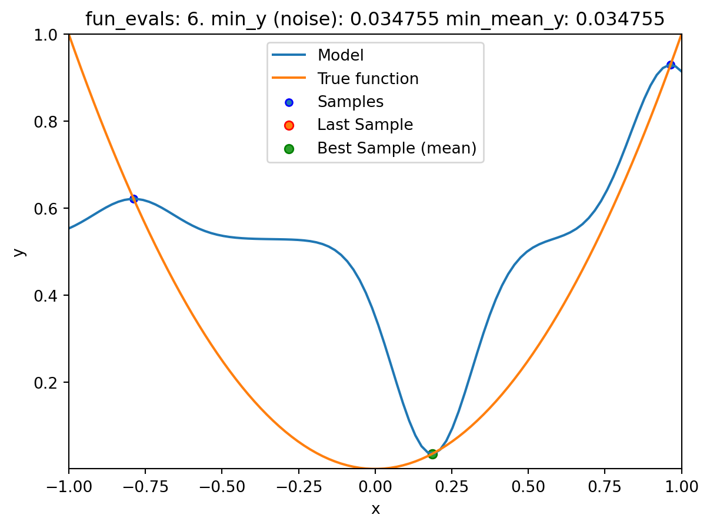
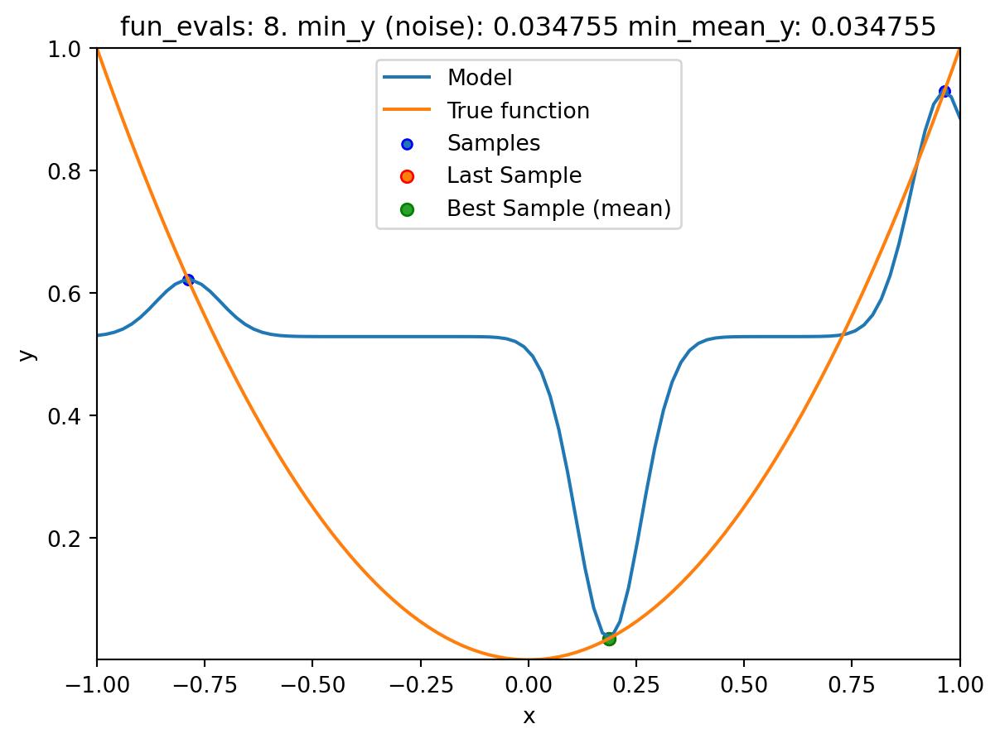
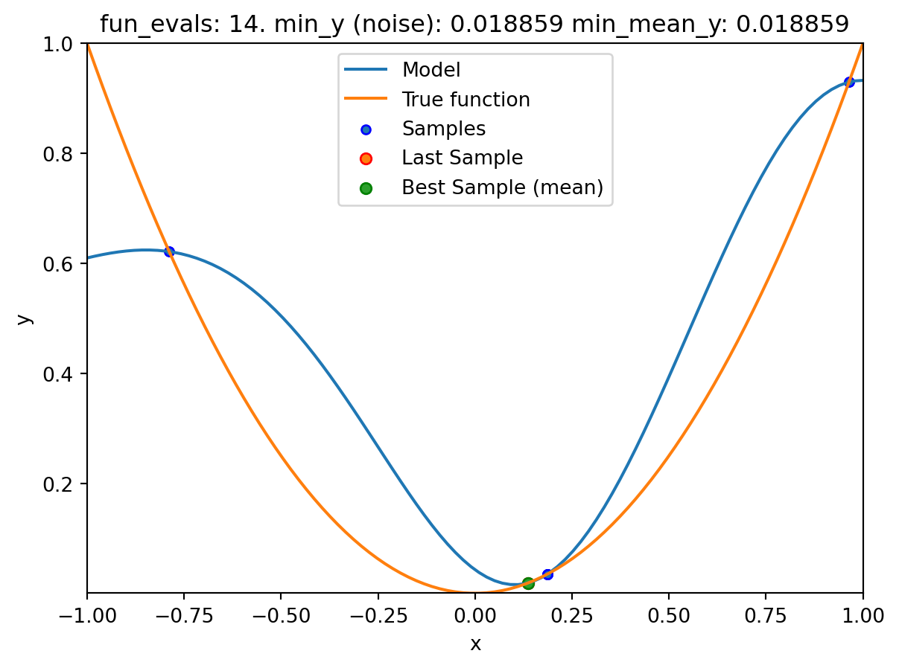
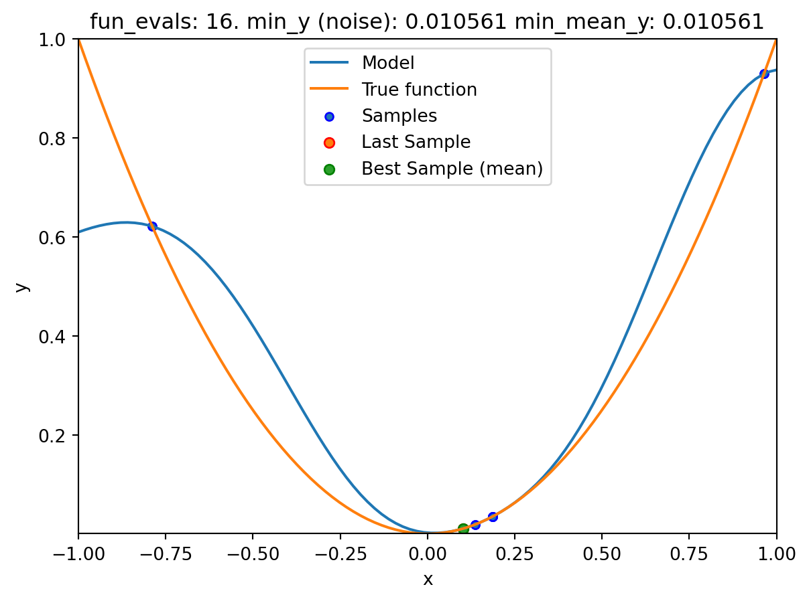
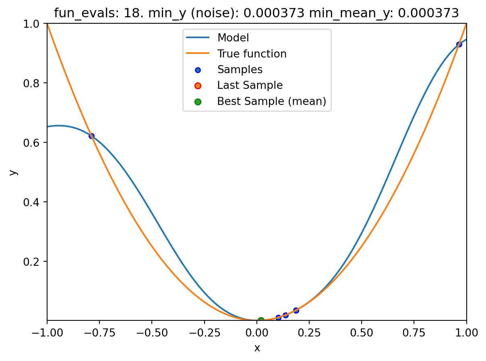
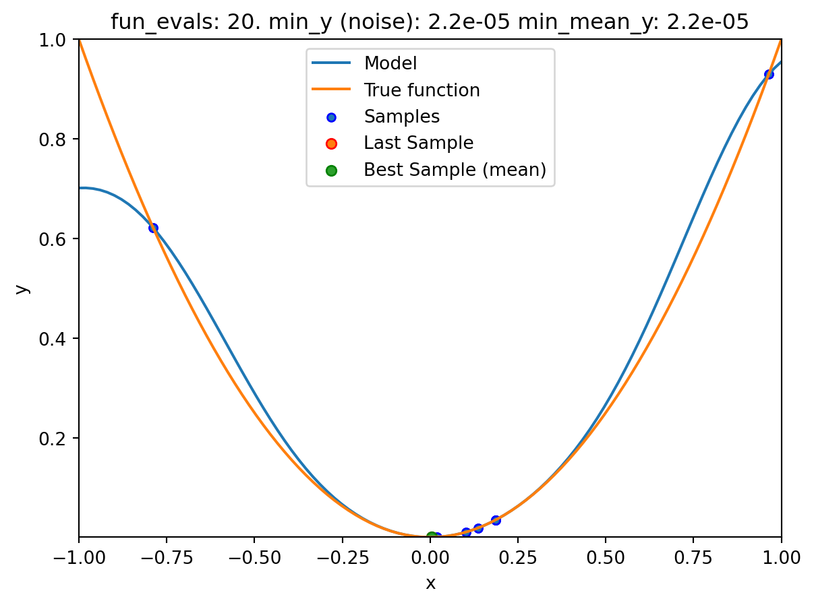
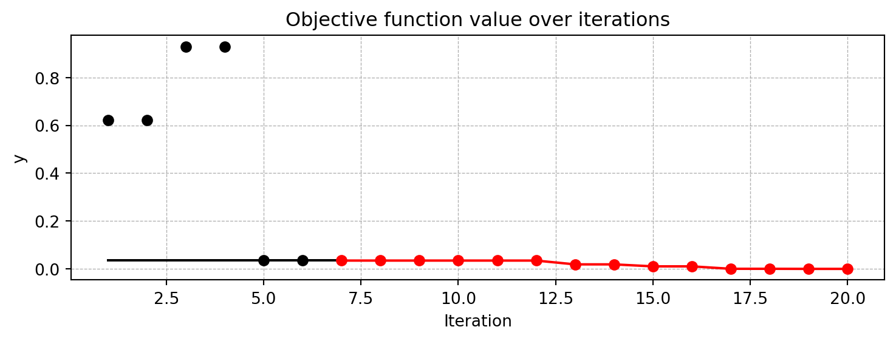

import numpy as np
from math import inf
from spotpython.fun.objectivefunctions import analytical
from spotpython.spot import spot
import matplotlib.pyplot as plt
from spotpython.utils.init import fun_control_init, get_spot_tensorboard_path
from spotpython.utils.init import fun_control_init, design_control_init, surrogate_control_init
PREFIX = "08"13 Handling Noise
This chapter demonstrates how noisy functions can be handled by Spot and how noise can be simulated, i.e., added to the objective function.
13.1 Example: Spot and the Noisy Sphere Function
13.1.1 The Objective Function: Noisy Sphere
The spotpython package provides several classes of objective functions, which return a one-dimensional output \(y=f(x)\) for a given input \(x\) (independent variable). Several objective functions allow one- or multidimensional input, some also combinations of real-valued and categorial input values.
An objective function is considered as “analytical” if it can be described by a closed mathematical formula, e.g., \[ f(x, y) = x^2 + y^2. \]
To simulate measurement errors, adding artificial noise to the function value \(y\) is a common practice, e.g.,:
\[ f(x, y) = x^2 + y^2 + \epsilon. \]
Usually, noise is assumed to be normally distributed with mean \(\mu=0\) and standard deviation \(\sigma\). spotpython uses numpy’s scale parameter, which specifies the standard deviation (spread or “width”) of the distribution is used. This must be a non-negative value, see https://numpy.org/doc/stable/reference/random/generated/numpy.random.normal.html.
Example: The sphere function without noise
The default setting does not use any noise.
from spotpython.fun.objectivefunctions import analytical
fun = analytical().fun_sphere
x = np.linspace(-1,1,100).reshape(-1,1)
y = fun(x)
plt.figure()
plt.plot(x,y, "k")
plt.show()
Example: The sphere function with noise
Noise can be added to the sphere function as follows:
from spotpython.fun.objectivefunctions import analytical
fun = analytical(seed=123, sigma=0.02).fun_sphere
x = np.linspace(-1,1,100).reshape(-1,1)
y = fun(x)
plt.figure()
plt.plot(x,y, "k")
plt.show()13.1.2 Reproducibility: Noise Generation and Seed Handling
spotpython provides two mechanisms for generating random noise:
- The seed is initialized once, i.e., when the objective function is instantiated. This can be done using the following call:
fun = analytical(sigma=0.02, seed=123).fun_sphere. - The seed is set every time the objective function is called. This can be done using the following call:
y = fun(x, sigma=0.02, seed=123).
These two different ways lead to different results as explained in the following tables:
Example: Noise added to the sphere function
Since sigma is set to 0.02, noise is added to the function:
from spotpython.fun.objectivefunctions import analytical
fun = analytical(sigma=0.02, seed=123).fun_sphere
x = np.array([1]).reshape(-1,1)
for i in range(3):
print(f"{i}: {fun(x)}")0: [0.98021757]
1: [0.99264427]
2: [1.02575851]The seed is set once. Every call to fun() results in a different value. The whole experiment can be repeated, the initial seed is used to generate the same sequence as shown below:
Example: Noise added to the sphere function
Since sigma is set to 0.02, noise is added to the function:
from spotpython.fun.objectivefunctions import analytical
fun = analytical(sigma=0.02, seed=123).fun_sphere
x = np.array([1]).reshape(-1,1)
for i in range(3):
print(f"{i}: {fun(x)}")0: [0.98021757]
1: [0.99264427]
2: [1.02575851]If spotpython is used as a hyperparameter tuner, it is important that only one realization of the noise function is optimized. This behaviour can be accomplished by passing the same seed via the dictionary fun_control to every call of the objective function fun as shown below:
Example: The same noise added to the sphere function
Since sigma is set to 0.02, noise is added to the function:
from spotpython.fun.objectivefunctions import analytical
fun = analytical().fun_sphere
fun_control = fun_control_init(
PREFIX=PREFIX,
sigma=0.02)
y = fun(x, fun_control=fun_control)
x = np.array([1]).reshape(-1,1)
for i in range(3):
print(f"{i}: {fun(x)}")0: [0.98021757]
1: [0.98021757]
2: [0.98021757]13.2 spotpython’s Noise Handling Approaches
The following setting will be used for the next steps:
fun = analytical().fun_sphere
fun_control = fun_control_init(
PREFIX=PREFIX,
sigma=0.02,
)spotpython is adopted as follows to cope with noisy functions:
fun_repeatsis set to a value larger than 1 (here: 2)noiseis set totrue. Therefore, a nugget (Lambda) term is added to the correlation matrixinit size(of thedesign_controldictionary) is set to a value larger than 1 (here: 3)
spot_1_noisy = spot.Spot(fun=fun,
fun_control=fun_control_init(
lower = np.array([-1]),
upper = np.array([1]),
fun_evals = 20,
fun_repeats = 2,
noise = True,
show_models=True),
design_control=design_control_init(init_size=3, repeats=2),
surrogate_control=surrogate_control_init(noise=True))spot_1_noisy.run()

spotpython tuning: 0.034752873669989026 [####------] 40.00% spotpython tuning: 0.03230817945928789 [#####-----] 50.00% 
spotpython tuning: 0.015578418800855254 [######----] 60.00% 
spotpython tuning: 0.0009550994714026289 [#######---] 70.00% 
spotpython tuning: 5.561590542963861e-05 [########--] 80.00% 
spotpython tuning: 7.181090066713707e-07 [#########-] 90.00% 
spotpython tuning: 4.5254143126895086e-07 [##########] 100.00% Done...
13.3 Print the Results
spot_1_noisy.print_results()min y: 4.5254143126895086e-07
min mean y: 4.5254143126895086e-07
x0: 0.0006727119972684825[['x0', 0.0006727119972684825]]spot_1_noisy.plot_progress(log_y=False,
filename="./figures/" + PREFIX + "_progress.png")
13.4 Noise and Surrogates: The Nugget Effect
13.4.1 The Noisy Sphere
13.4.1.1 The Data
- We prepare some data first:
import numpy as np
import spotpython
from spotpython.fun.objectivefunctions import analytical
from spotpython.spot import spot
from spotpython.design.spacefilling import SpaceFilling
from spotpython.build.kriging import Kriging
import matplotlib.pyplot as plt
gen = SpaceFilling(1)
rng = np.random.RandomState(1)
lower = np.array([-10])
upper = np.array([10])
fun = analytical().fun_sphere
fun_control = fun_control_init(
PREFIX=PREFIX,
sigma=4)
X = gen.scipy_lhd(10, lower=lower, upper = upper)
y = fun(X, fun_control=fun_control)
X_train = X.reshape(-1,1)
y_train = y- A surrogate without nugget is fitted to these data:
S = Kriging(name='kriging',
n_theta=1,
noise=False)
S.fit(X_train, y_train)
X_axis = np.linspace(start=-13, stop=13, num=1000).reshape(-1, 1)
mean_prediction, std_prediction, ei = S.predict(X_axis, return_val="all")
plt.scatter(X_train, y_train, label="Observations")
plt.plot(X_axis, mean_prediction, label="mue")
plt.legend()
plt.xlabel("$x$")
plt.ylabel("$f(x)$")
_ = plt.title("Sphere: Gaussian process regression on noisy dataset")
- In comparison to the surrogate without nugget, we fit a surrogate with nugget to the data:
S_nug = Kriging(name='kriging',
n_theta=1,
noise=True)
S_nug.fit(X_train, y_train)
X_axis = np.linspace(start=-13, stop=13, num=1000).reshape(-1, 1)
mean_prediction, std_prediction, ei = S_nug.predict(X_axis, return_val="all")
plt.scatter(X_train, y_train, label="Observations")
plt.plot(X_axis, mean_prediction, label="mue")
plt.legend()
plt.xlabel("$x$")
plt.ylabel("$f(x)$")
_ = plt.title("Sphere: Gaussian process regression with nugget on noisy dataset")- The value of the nugget term can be extracted from the model as follows:
S.LambdaS_nug.Lambda0.0005592051705322895- We see:
- the first model
Shas no nugget, - whereas the second model has a nugget value (
Lambda) larger than zero.
- the first model
13.5 Exercises
13.5.1 Noisy fun_cubed
- Analyse the effect of noise on the
fun_cubedfunction with the following settings:
fun = analytical().fun_cubed
fun_control = fun_control_init(
sigma=10)
lower = np.array([-10])
upper = np.array([10])13.5.2 fun_runge
- Analyse the effect of noise on the
fun_rungefunction with the following settings:
lower = np.array([-10])
upper = np.array([10])
fun = analytical().fun_runge
fun_control = fun_control_init(
sigma=0.25)13.5.3 fun_forrester
- Analyse the effect of noise on the
fun_forresterfunction with the following settings:
lower = np.array([0])
upper = np.array([1])
fun = analytical().fun_forrester
fun_control = fun_control_init(
sigma=5)13.5.4 fun_xsin
- Analyse the effect of noise on the
fun_xsinfunction with the following settings:
lower = np.array([-1.])
upper = np.array([1.])
fun = analytical().fun_xsin
fun_control = fun_control_init(
sigma=0.5)